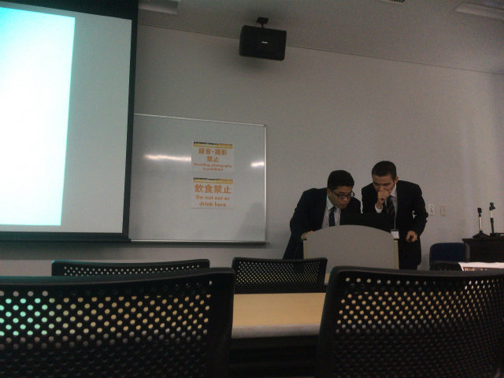
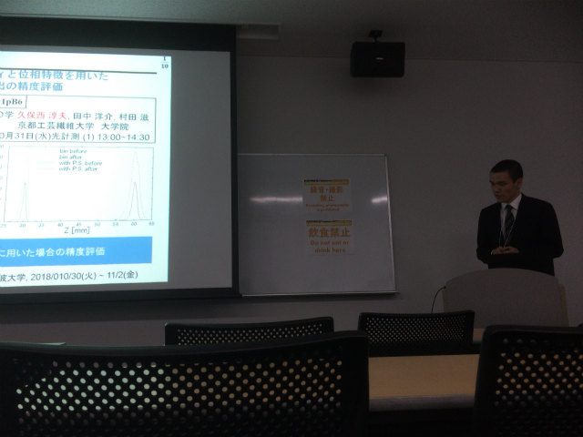
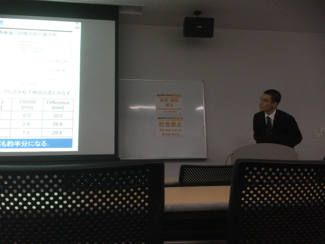
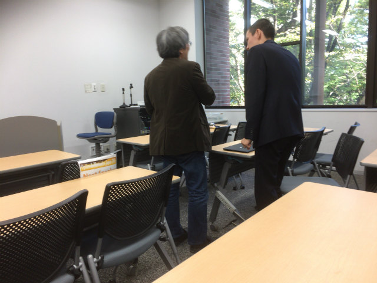
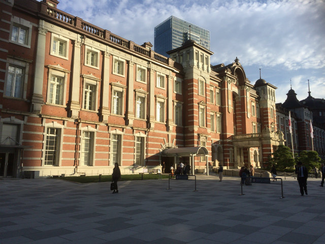
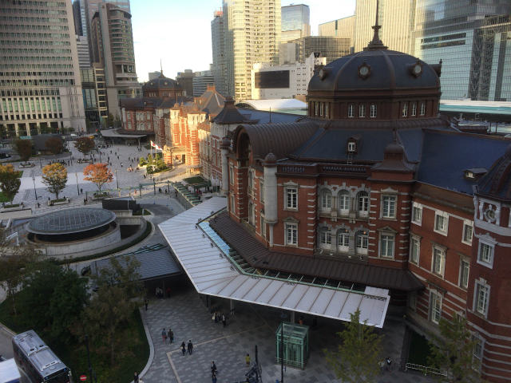
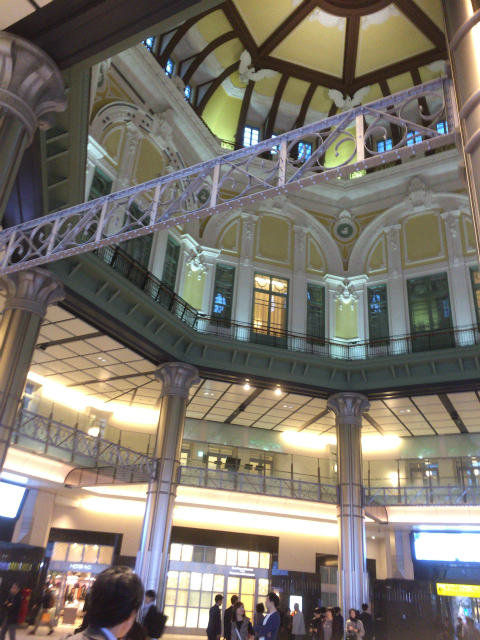
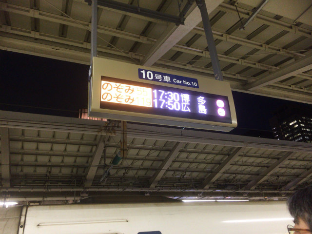

| ・ 日本光学会年次学術講演会 Optics & Photonics Japan 2018 Tokyo＠筑波大学東京キャンパス文京校舎(H30.10.30-31) | |||
先週に引き続いて，日本光学会年次学術講演会 Optics & Photonics Japan 2018 TokyoにてM2のK保西くんが光計測の研究で「位相回復ホログラフィと位相特徴を用いた奥行位置検出の精度評価」を発表しました．終わってからの議論が細々した話まであって濃密でした．去年もK保西くんだけでしたが，ジョイントの方でM1N谷さんが発表しています． |
|||
|
ポスターはショートプレゼン増えました |

まずは機材チェック | ||
|

スタート |

質疑中 | ||
|

終わってからの議論 |

東京駅 | ||
|

こっから見たかったんで |
オランダからの助教耐久試験完了祝い | ||
|

ドームがいい |

帰ろう | ||